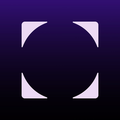

Bruton
- BR-025Children / Animation
 ✕
✕ - BR-026Comic Cuts✓
- BR-027Just For Laughs✓
- BR-064Murder, Mystery, Suspense✕
- BR-085Yeah Jazz!✕
- BR-098Salsa/Mexico/South America✓
- BR-146Spain✓
- BR-165Nursery Rhymes✓
- BR-183Comic Cuts 2

✓ - BR-192The History of Jazz 2✓
- BR-195Kids Are Kickin'✓
- BR-196Kids World✓
- BR-197Tots TV✓
- BR-246What A Load Of Rubbish!✓
- BR-318Promo Power 2✓
- BR-339The Caring Approach✓
- BR-353Classic Film and TV 1 - Spy-Fi✓
- BR-354Classic Film and TV 2 - Matinee Mania✓
- BR-355Classic Film and TV 3 - Radio Times✓
- BR-356Classic Film and TV 4 - Comic Cuts✓
- BR-384Kids R Cool✓
- BR-390American Marching Bands✓
- BR-393Mambo Madness✓
- BR-397Cartoons & Quirky Comedy✓
- BR-399It's Playtime✓
- BR-403Wacky World✓
- BR-425Sport - Power & Energy✓
- BR-431Kitsch & Quirky✓
- BR-435Game Zone✓
- BR-437Science & Technology✓
- BR-438Kidz' TV✓
- BR-441Widescreen Drama✓
- BR-447Vitamin Pack✓
- BR-454Big Screen Superheroes✓
- BR-456Big Screen Feelgood Movies✓
- BR-462Big Screen Legends 2✓
- BR-463Big Screen Romantic Comedy✓
- BR-464Retro Revibe✓
- BR-469Vitamin Pack 2✓
- BR-479Creative, Quirky, Simple✓
- BR-484Tween Nation✓
- BR-487Colourful Characters✓